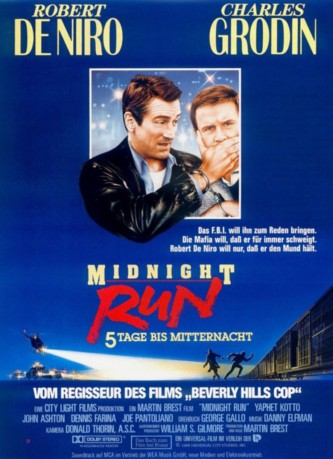

#3641 Midnight Run - 5 Tage bis Mitternacht
Alternativ: Midnight Run
 
 IMDB-Wertung: 7.6 / 10
IMDB-Wertung: 7.6 / 10  Metascore: 0
Metascore: 0 
Der Kopfgeldjäger Jack Walsh träumt von einem kleinem Café zur Altersversorgung. Die 100.000 Dollar, die ihm für die Ergreifung von Johnathan Mardukas geboten werden, kommen gerade recht. Mardukas hat als Buchhalter der Mafia die ehrenwerte Gesellschaft um 15 Millionen Dollar gebracht und das Geld der Sozialhilfe überwiesen. Da er überdies im Besitz geheimer Unterlagen ist, jagt ihn auch das FBI. Walsh hat keine Mühe, den Schreibtischtäter zu fangen. Schwieriger ist es, ihn innerhalb weniger Tage von New nach Los Angeles zu bringen. Zum Schluß schenkt Walsh Mardukas die Freiheit und erhält 300.000 Dollar.
Jahr: 1988
Dauer: 126 Minuten
FSK: 12
Land: USA Studio: Universal PicturesTonspuren:
Untertitel:
Auflösung: 1080p (1920x1040) Größe: 10076 MB
Genre: Action, Thriller, Komödie, Krimi
Regisseur: Martin Brest
Drehbuch: Jörg Wagner
Soundtrack:
Darsteller:
 Robert De Niro als Jack Walsh
Robert De Niro als Jack Walsh Charles Grodin als Jonathan Mardukas
Charles Grodin als Jonathan Mardukas Yaphet Kotto als Alonzo Mosely
Yaphet Kotto als Alonzo Mosely John Ashton als Marvin Dorfler
John Ashton als Marvin Dorfler Dennis Farina als Jimmy Serrano
Dennis Farina als Jimmy Serrano Joe Pantoliano als Eddie Moscone
Joe Pantoliano als Eddie Moscone Wendy Phillips als Gail
Wendy Phillips als Gail- Danielle DuClos als Denise
 Philip Baker Hall als Sidney
Philip Baker Hall als Sidney Tom McCleister als Red Wood
Tom McCleister als Red Wood Lois Smith als Mrs. Nelson
Lois Smith als Mrs. Nelson Frank Pesce als Carmine
Frank Pesce als Carmine- Jack N. Young als Amarillo Desk Sergeant
 Tracey Walter als Diner Counter Man
Tracey Walter als Diner Counter Man- James Portolese als Serrano Bodyguard
- Tom Irwin als FBI Agent Perry
 Jimmie Ray Weeks als FBI Agent Tuttle
Jimmie Ray Weeks als FBI Agent Tuttle George D. Miklos als Airport Manager , uncredited
George D. Miklos als Airport Manager , uncredited Richard Foronjy als Tony Darvo
Richard Foronjy als Tony Darvo- Robert Miranda als Joey
 Jack Kehoe als Jerry Geisler
Jack Kehoe als Jerry Geisler- Mary Gillis als Bus Ticket Clerk
 John Toles-Bey als Monroe Bouchet
John Toles-Bey als Monroe Bouchet- Thomas J. Hageboeck als Sergeant Gooch
- Stanley White als Stanley
- Scott McAfee als Boy on Plane
- Linda Margules als Car Rental Clerk
- Fran Brill als Dana Mardukas
- Michael Hawkins als FBI Surveillance Agent #1
- John Hammil als FBI Surveillance Agent #2
- Lou Felder als Airline Pilot
- Cameron Milzer als Stewardess #1
- Sonia M. Roberts als Stewardess #2
- Sam Sanders als Train Porter
- Paul Joseph McKenna als Ohio Policeman
- Matt Jennings als Jason
- Rosemarie Murphy als Coffee Shop Waitress
- Robert Coleman als Native American
- William Robbins als Native American
- Wilfred Netsosie als Native American
- Sherman L. Robbins als Native American
- Dale Beard Jr. als Native American
- Thomas Nez als Native American
- Richard Gonzalez als Bar Cashier
- Bill Fritz als Bar Customer
- Pete Jensen als Flagstaff Police Captain
- Andy Charnoki als Flagstaff Sheriff
- Robert Vento als Serrano Bodyguard
- Joe 'Tippy' Zeoli als Serrano Bodyguard
- Armando Muniz als Serrano Bodyguard
Datei: X:\1988\Midnight Run - 5 Tage bis Mitternacht (1988, FSK12, 1920x1040).mkv seit 11.05.2016
Festplatte: HD 1987-1991
 Es gibt insgesamt 66 Filme in der Gruppe '1988'
Es gibt insgesamt 66 Filme in der Gruppe '1988'